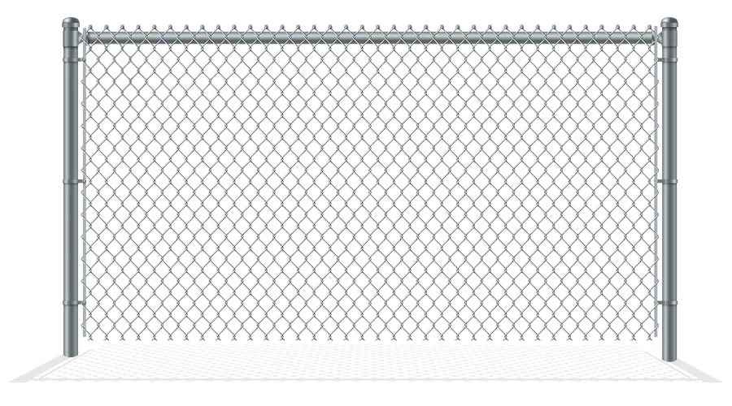
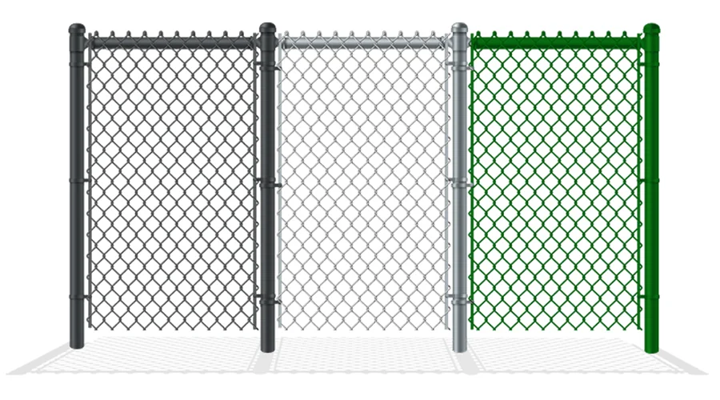
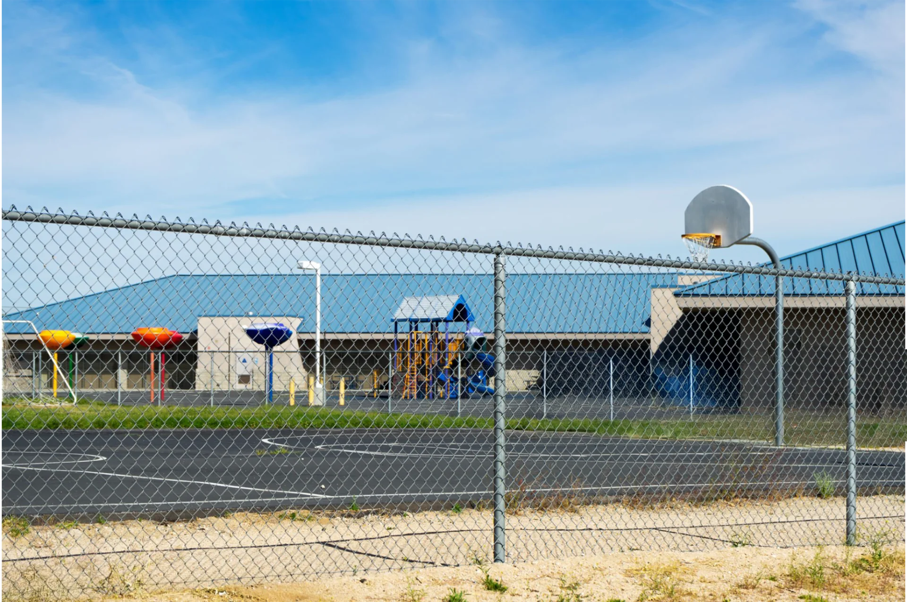
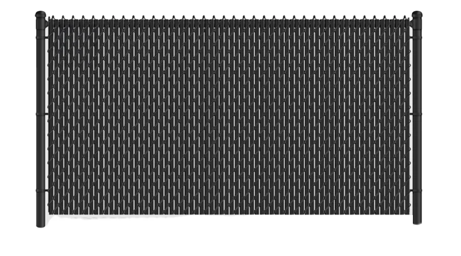
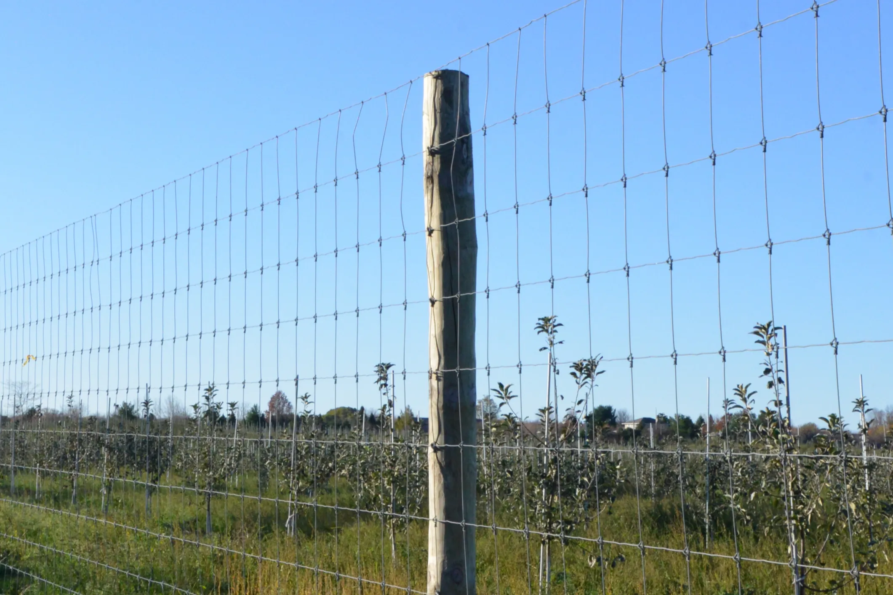

Galvanized Chain Link Fence
Hot-dip or electro-galvanized finish providing excellent rust resistance with a silver metallic appearance. The most economical option for general-purpose fencing.
Galvanized Chain Link Specifications
Complete component specifications for residential and commercial chain link fencing systems.
| Component | Residential | Commercial |
|---|---|---|
| Mesh Fabric | ||
| Mesh Material | Galvanized after weaving / Galvanized before weaving | Galvanized after weaving |
| Standard | — | ASTM A 392 Class 1 or 2 |
| Wire Gauge | 9, 11, 11.5, 12.5 | 6, 9, 11 |
| Mesh Opening | 1-1/4", 2", 2-1/4", 2-3/8" | 3/8", 1/2", 5/8", 1", 1-1/4", 1-1/2", 1-3/4", 2" |
| Height | 3ft, 42", 4ft, 5ft, 6ft | 3ft, 42", 4ft, 5ft, 6ft, 7ft, 8ft, 9ft, 10ft, 12ft |
| Edge Treatment | ≤5ft: Knuckled-Knuckled; ≥6ft: Knuckled-Barbed | ≤5ft: Knuckled-Knuckled; ≥6ft: Knuckled-Barbed |
| Framework | ||
| Top Rail (3-5ft) | 1-3/8" OD × 17 Ga / 16 Ga | 1-5/8" OD × Residential / Heavy |
| Top Rail (6ft) | 1-3/8" OD × 17/16 Ga; 1-5/8" OD × 16 Ga | 1-5/8" OD × Residential / Heavy |
| Top Rail (6-12ft) | — | 1-5/8" OD × Residential / Heavy |
| Line Post (3-5ft) | 1-5/8" OD × 16 Ga | 1-7/8" OD × Res./Heavy; 2-3/8" OD × Comm./Res./Heavy |
| Line Post (6ft) | 1-7/8" OD × 16 Ga | 2-3/8" OD × Comm./Res./Heavy |
| Line Post (6-12ft) | — | 2-3/8" OD × Comm./Res./Heavy |
| Terminal Post (3-5ft) | 1-7/8" OD × 16 Ga; 2-3/8" OD × 16 Ga | 2-3/8" OD × Comm./Res./Heavy; 4" OD × Comm./Res./Heavy |
| Terminal Post (6ft) | 2-3/8" OD × 16 Ga | 2-3/8" OD × Comm./Res./Heavy; 4" OD × Comm./Res./Heavy |
| Terminal Post (3-12ft) | — | 2-3/8" OD × Comm./Res./Heavy; 4" OD × Comm./Res./Heavy |
| Gates | ||
| Gate Fabric | Same as fence fabric | Same as fence fabric |
| Gate Frame | Same as selected top rail | Same as selected top rail |
| Heavy Duty Gate | — | 6-5/8" OD Heavy tube; 8-5/8" OD Heavy tube |
| Fittings & Accessories | ||
| Tension / Brace Band | Hot-dip galvanized pressed steel | Hot-dip galvanized pressed steel |
| Top Cap / Eye Top / Rail End | Die-cast aluminum or pressed steel | Malleable iron / Cast iron / Pressed steel |
| Tie Wire | Aluminum or galvanized steel | Aluminum or galvanized steel |
| Privacy Slats | ||
| Material | Polyethylene thermoplastic | Polyethylene thermoplastic |
| Colors | Green, Black, Brown, Gray, Redwood, Blue, Desert Sand | Green, Black, Brown, Gray, Redwood, Blue, Desert Sand |
- Mesh Material: Galvanized after weaving (GAW) or Galvanized before weaving (GBW)
- Zinc Coating: Hot-dip galvanized 40-270 g/m²; Electro-galvanized 10-30 g/m²
- Standards: ASTM A 392 Class 1 or 2; BS EN 10223-7
- Custom heights, mesh openings and wire gauges available upon request
Product Information
Galvanized chain link fencing is one of the most popular and cost-effective fencing solutions. The zinc coating provides excellent corrosion resistance, making it suitable for a wide range of residential and commercial applications. Available in residential grade (lighter wire) and commercial grade (heavier wire, ASTM A 392 compliant).
Benefits
- ✓Cost-effective — most economical fencing option per linear foot
- ✓Excellent corrosion resistance through hot-dip or electro galvanizing
- ✓High tensile strength for reliable security
- ✓Low maintenance — no painting required, 15-30 year service life
- ✓Flexible installation for various terrain types
- ✓Residential and commercial grades available
Applications
Residential yards, school playgrounds, sports fields, industrial facilities, commercial properties, airport perimeters, highway barriers.
Packing & Packaging
Bundle Package
Rolls are bundled together with steel straps and wrapped in plastic film for protection during transport.
Pallet Package
Rolls stacked uniformly on wooden pallets and wrapped with plastic stretch film for safe shipping.
Container Loading
Rolls are loaded into 20ft or 40ft containers for secure, efficient ocean freight delivery worldwide.
Where Galvanized Chain Link Fence Is Used
Trusted across industries for reliable perimeter security, livestock containment, and public safety fencing.






Galvanized Chain Link Fence - Get a Free Quote
Trusted by 30+ countries | ISO 9001 & CE Certified | Factory-Direct Supply
MOQ from 200 units | 15-day production lead time | FOB/CIF shipping terms
📞 +86 178 3238 3339 | WhatsApp available